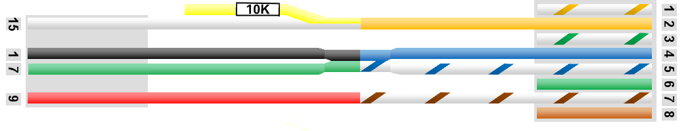

Connections to the modem
Comtech:
The Comtech modem is connected to the arbitrator via the Comtech harness and a RJ45 cable. Modem on the left and Arbitrator on the right.
| Pin 15 | Modem lock, Normally open contact on RX relay.
When the modem has RX lock this pin will go from high voltage to low voltage.
We call this modem low lock. For this function to work you must have system type 2 added in the DAC system type or low lock in the MXP and RX lock on.
The arbitrator does not use this RX lock and passes the voltage state on to the DAC or MXP.
Because the RX lock is done via a relay in the Comtech, voltage may need to be added to this pin using the yellow wire with the in line 10K resister.
Voltage can be found on the TMS strip or nema port on the MXP.
I.E. No RX lock = 12Vdc between pin 15 and pin 7.
RX lock = 0Vdc between pin 15 and pin 7.
|
| Pin 1 | GND |
| Pin 7 | Common contact for the RX lock relay and should be connected to GND |
| Pin 9 | TX mute, this is controlled by the arbitrator not the DAC or MXP.
For this modem, the mute is activated when the voltage is low. In the Arbitrator there is a Mute Output polarity this should be set to low voltage mute.
I.E. TX mute active, no TX = 0Vdc between pin 9 and pin 1.
TX mute not active, TX allowed = 12Vdc between pin 9 and pin 1. |
Click image to enlarge.